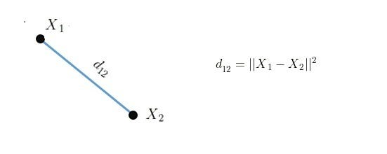
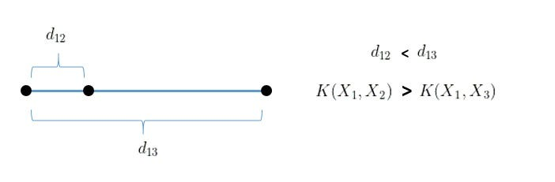
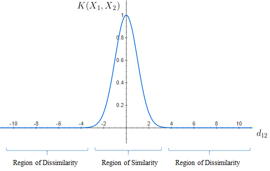
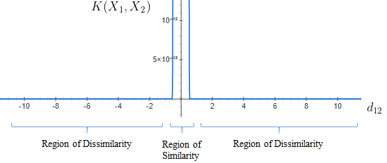
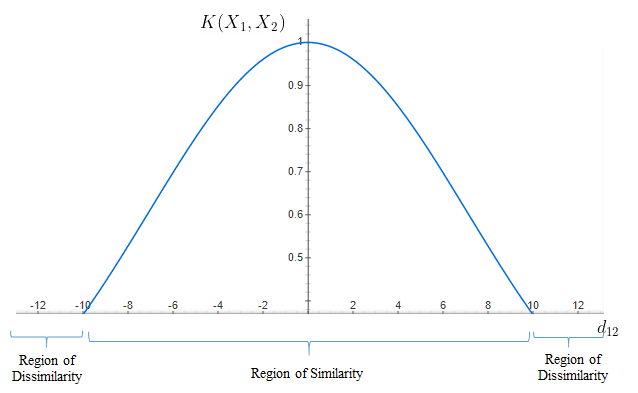
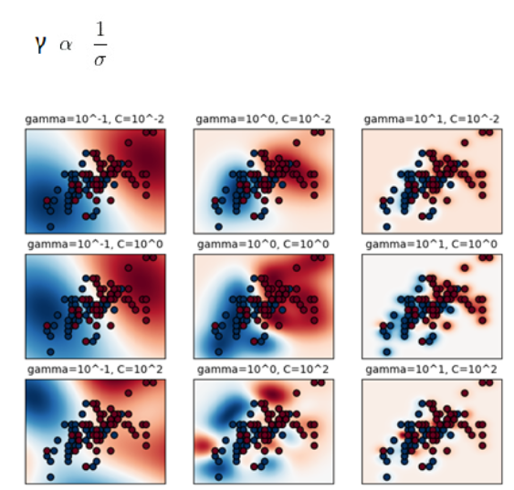

Radial Basis Function (RBF) Kernel: The Go-To Kernel Hạt nhân Radial Basis Function (RBF): Hạt nhân Go-To
Sushanth Sreenivasa Sushanth Sreenivasa
Oct 12, 2020 Ngày 12 tháng 10 năm 2020
4 min read Đọc trong 4 phút
You’re working on a Machine Learning algorithm like Support Vector Machines for
non-linear datasets and you can’t seem to figure out the right feature transform or the right kernel to
use. Bạn đang làm việc trên một thuật toán Học máy như Máy vectơ hỗ trợ
cho các tập dữ liệu phi tuyến tính và bạn dường như không thể tìm ra phép biến đổi tính năng phù hợp hoặc
hạt nhân phù hợp để sử dụng.
Well, fear not because Radial Basis Function (RBF) Kernel is your savior. Vâng, đừng lo lắng vì Hạt nhân Radial Basis Function (RBF) chính là vị cứu tinh của
bạn.
RBF kernels are the most generalized form of kernelization and is one of the most
widely used kernels due to its similarity to the Gaussian distribution.
Hạt nhân RBF là dạng hạt nhân hóa tổng quát nhất và là một trong những hạt nhân được sử dụng rộng rãi nhất
do có điểm tương đồng với hạt nhân Gaussian phân phối.
The RBF kernel function for two points X₁ and X₂ computes the similarity or how close
they are to each other. Hàm hạt nhân RBF cho hai điểm X₁ và X₂ tính toán
mức độ tương đồng hoặc mức độ gần nhau của chúng.
This kernel can be mathematically represented as follows: Hạt nhân này có thể được biểu diễn bằng toán học như sau:
K(X1,X2) = exp(-||X₁-X₂||^2 / 2σ²)
where,
‘σ’ (sigma) is the variance and our hyperparameter
||X₁ – X₂|| is the Euclidean (L₂-norm) Distance between two points X₁ and X₂
Let d₁₂ be the distance between the two points X₁ and X₂, Giả sử d₁₂ là khoảng cách giữa hai điểm X₁ và X₂,
we can now represent d₁₂ as follows: bây giờ chúng
ta có thể biểu diễn d₁₂ như sau:

The kernel equation can be re-written as follows:
Phương trình hạt nhân có thể được viết lại như sau:
K(X₁,X₂)=exp(-d₁₂/2σ²) K(X₁,X₂)=exp(-d₁₂/2σ²)
The maximum value that the RBF kernel can be is 1 and occurs when d₁₂ is 0 which is
when the points are the same, Giá trị lớn nhất mà hạt nhân RBF có thể đạt
được là 1 và xảy ra khi d₁₂ bằng 0, tức là khi các điểm giống nhau,
i.e. X₁ = X₂. thidu X₁ = X₂.
When the points are the same, there is no distance between them and therefore they are
extremely similar Khi các điểm giống nhau, không có khoảng cách giữa chúng
và do đó chúng cực kỳ giống nhau
When the points are separated by a large distance, then the kernel value is less than 1
and close to 0 which would mean that the points are dissimilar Khi các
điểm cách nhau một khoảng cách lớn, thì giá trị hạt nhân nhỏ hơn 1 và gần bằng 0, điều này có nghĩa là các
điểm không giống nhau
Distance can be thought of as an equivalent to dissimilarity because we can notice that
when distance between the points increases, Khoảng cách có thể được coi
là tương đương với sự không giống nhau vì chúng ta có thể nhận thấy rằng khi khoảng cách giữa các điểm tăng
lên,
they are less similar. chúng ít giống nhau
hơn.

Fig 3: Hình 3:
Similarity decreases as distance increases Độ giống
nhau giảm dần khi khoảng cách tăng
It is important to find the right value of ‘σ’ (sigma) to decide which points should be
considered similar and this can be demonstrated on a case by case basis.
Điều quan trọng là phải tìm đúng giá trị của ‘σ’ để quyết định những điểm nào được coi là tương tự và điều
này có thể được chứng minh trên cơ sở từng trường hợp cụ thể.
a] σ = 1 a] σ = 1
When σ = 1, Khi σ = 1,
σ² = 1 and the RBF kernel’s mathematical equation will be as follows: σ² = 1 và phương trình toán học của hạt nhân RBF sẽ như sau:
K(X₁,X₂) = exp(-||X₁-X₂||^2 / 2) K(X₁,X₂) =
exp(-||X₁-X₂||^2 / 2)
The curve for this equation is given below and we can notice that as the distance
increases, Đường cong cho phương trình này được đưa ra bên dưới và chúng
ta có thể nhận thấy rằng khi khoảng cách tăng lên,
the RBF Kernel decreases exponentially and is 0 for distances greater than 4.
Hạt nhân RBF giảm theo cấp số nhân và bằng 0 đối với khoảng cách lớn hơn 4.

Fig 4: Hình 4:
RBF Kernel for σ = 1 Hạt nhân RBF cho σ = 1
We can notice that when d₁₂ = 0, the similarity is 1 and as d₁₂ increases beyond 4
units, the similarity is 0 Chúng ta có thể nhận thấy rằng khi d₁₂ = 0, độ
tương đồng là 1 và khi d₁₂ tăng vượt quá 4 đơn vị, độ tương đồng là 0
From the graph, we see that if the distance is below 4, the points can be considered
similar and if the distance is greater than 4 then the points are dissimilar Từ đồ thị, chúng ta thấy rằng nếu khoảng cách dưới 4, các điểm có thể được coi là tương
tự và nếu khoảng cách lớn hơn 4 thì các điểm không giống nhau
b] σ = 0.1 b] σ = 0,1
When σ = 0.1, Khi σ = 0,1,
σ² = 0.01 and the RBF kernel’s mathematical equation will be as follows: σ² = 0,01 và phương trình toán học của hạt nhân RBF sẽ như sau:
K(X₁,X₂) = exp(-||X₁-X₂||^2 / .01) K(X₁,X₂) =
exp(-||X₁-X₂||^2 / .01)
The width of the Region of Similarity is minimal for σ = 0.1 and hence, Chiều rộng của Vùng tương đồng là tối thiểu đối với σ = 0,1 và do đó,
only if points are extremely close they are considered similar. chỉ khi các điểm cực kỳ gần nhau thì chúng mới được coi là tương tự.

Fig 5: Hình 5:
RBF Kernel for σ = 0.1 Hạt nhân RBF đối với σ =
0,1
We see that the curve is extremely peaked and is 0 for distances greater than
0.2 Chúng ta thấy rằng đường cong cực kỳ nhọn và là 0 đối với khoảng cách
lớn hơn 0,2
The points are considered similar only if the distance is less than or equal to
0.2 Các điểm chỉ được coi là tương tự nếu khoảng cách nhỏ hơn hoặc bằng
0,2
b] σ = 10 b] σ = 10
When σ = 10, Khi σ = 10,
σ² = 100 and the RBF kernel’s mathematical equation will be as follows: σ² = 100 và phương trình toán học của hạt nhân RBF sẽ như sau:
K(X₁,X₂) = exp(-||X₁-X₂||^2 / 100) K(X₁,X₂) =
exp(-||X₁-X₂||^2 / 100)
The width of the Region of Similarity is large for σ = 100 because of which the points
that are farther away can be considered to be similar. Chiều rộng của
Vùng tương tự lớn đối với σ = 100 do đó các điểm xa hơn có thể được coi là tương tự.

Fig 6: Hình 6:
RBF Kernel for σ = 10 Hạt nhân RBF cho σ = 10
The width of the curve is large Chiều rộng của đường
cong lớn
The points are considered similar for distances up to 10 units and beyond 10 units they
are dissimilar Các điểm được coi là tương tự nhau đối với khoảng cách lên
đến 10 đơn vị và vượt quá 10 đơn vị thì chúng không giống nhau
It is evident from the above cases that the width of the Region of Similarity changes
as σ **** changes. Rõ ràng từ các trường hợp trên, chiều rộng của Vùng
tương tự thay đổi khi σ **** thay đổi.
Finding the right σ (sigma) for a given dataset is important and can be done by using
hyperparameter tuning techniques like Grid Search Cross Validation and Random Search Cross
Validation. Việc tìm đúng σ cho một tập dữ liệu nhất định là rất quan
trọng và có thể thực hiện được bằng cách sử dụng các kỹ thuật điều chỉnh siêu tham số như Xác thực chéo tìm
kiếm lưới và Xác thực chéo tìm kiếm ngẫu nhiên.
RBF Kernel is popular because of its similarity to K-Nearest Neighborhood
Algorithm. RBF Kernel phổ biến vì nó tương tự như Thuật toán lân cận
K-gần nhất.
It has the advantages of K-NN and overcomes the space complexity problem as RBF Kernel
Support Vector Machines just needs to store the support vectors during training and not the entire
dataset. Nó có những ưu điểm của K-NN và khắc phục được vấn đề về độ phức
tạp không gian vì RBF Kernel Support Vector Machines chỉ cần lưu trữ các vectơ hỗ trợ trong quá trình đào
tạo chứ không phải toàn bộ tập dữ liệu.
The RBF Kernel Support Vector Machines is implemented in the scikit-learn library and
has two hyperparameters associated with it, RBF Kernel Support Vector
Machines được triển khai trong thư viện scikit-learn và có hai siêu tham số liên kết với nó,
‘C’ for SVM and ‘γ’ (gamma) for the RBF Kernel. ‘C’
cho SVM
và ‘γ’ cho RBF Kernel.
Here, Tại đây,
γ (gamma) is inversely proportional to σ (sigma). γ
tỷ lệ
nghịch
với σ.

Fig 7: Hình 7:
RBF Kernel SVM for Iris Dataset RBF Kernel SVM cho
Bộ dữ liệu Iris
From the figure, Từ hình,
we can see that as γ (gamma) increases, chúng ta có
thể
thấy rằng khi γ tăng,
i.e. σ (sigma) reduces, khi đó σ giảm,
the model tends to overfit for a given value of C.
mô hình có xu hướng quá phù hợp với một giá trị C nhất định.
Finding the right γ (gamma) or σ (sigma) along with the value of C is essential in
order to
achieve the
best Bias-Variance Trade off. Việc tìm đúng γ hoặc σ cùng với giá trị C là
điều cần thiết để đạt được Sự đánh đổi giữa Độ lệch và Phương sai tốt nhất.